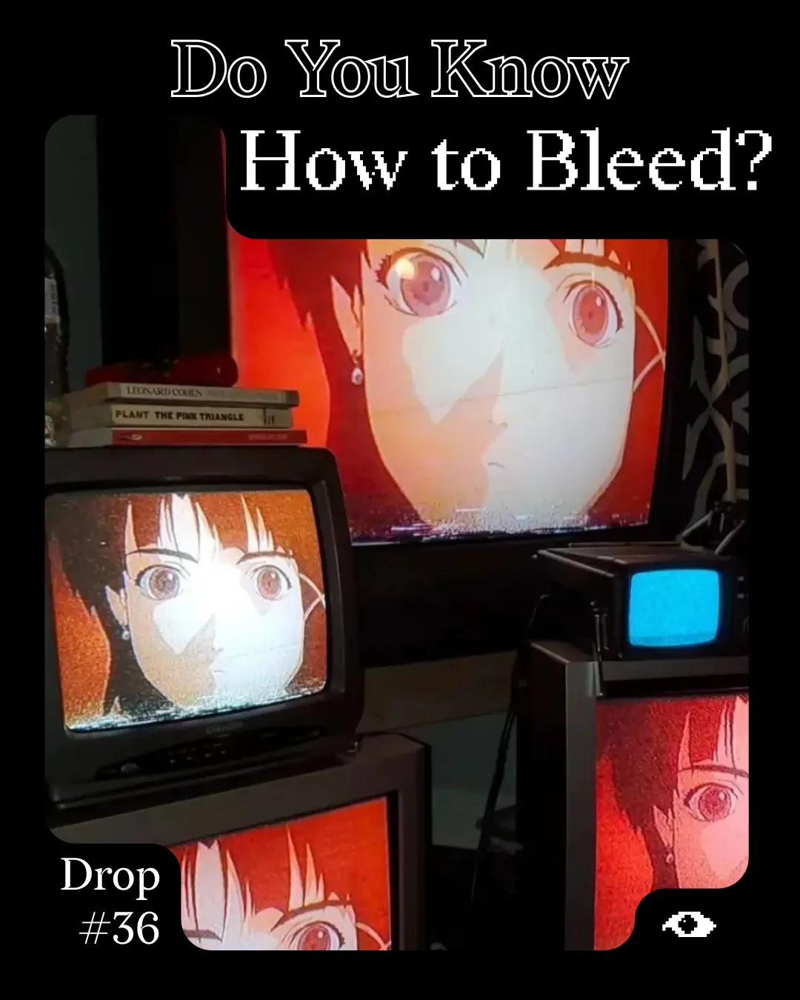
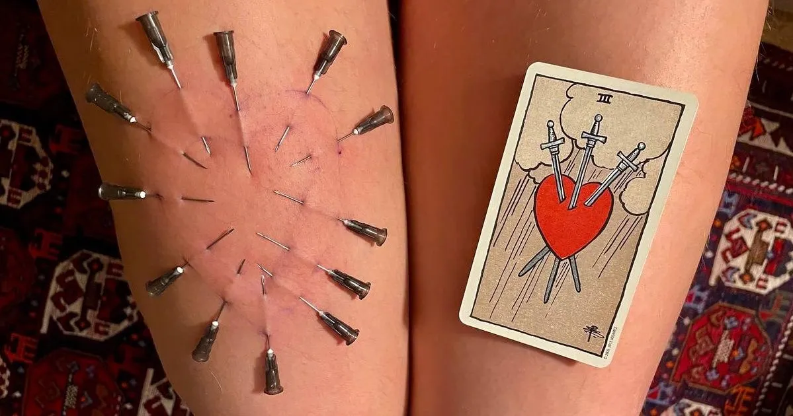
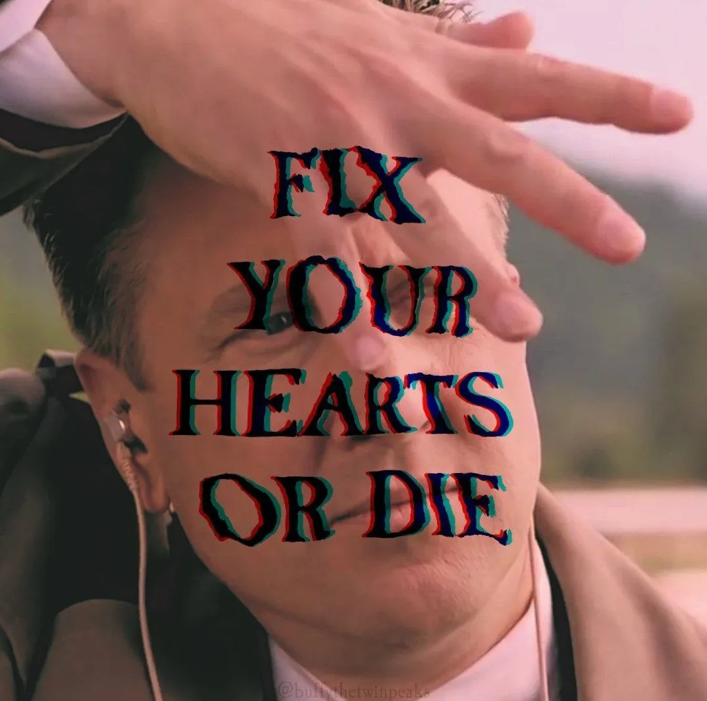

Drop #36 · July 15, 2025 · 8 min read
A manifesto on post-reality organizing
Hey everyone (▰˘◡˘▰)
We’re back with a new Simone’s DROP after some weeks of radio silence.
This one might make you feel uncomfortable. Good. Comfort is the enemy of change, and change is exactly what Simone Robutti is calling for in this uncompromising manifesto on post-reality organizing. Following Simone's previous work on political holism, this DROP is a call to abandon the luxury of prefigurative politics and embrace the messy work of building the social infrastructure that makes collective action possible.
“The party is over. Reality is over. The future is abolished. It's a great time to bleed.”
Simone Robutti is a knot of flows and occasionally he’s a person too. He engages in Tech Unionism, Algorithmic Accountability, Common Cybernetics, and Democratic Organizational Design. He works as a consultant/trainer on Organization and Process Design. You can find his blog at this link.

The party is over. Reality is over. The Future is abolished. It’s a great time to bleed.
The failure of the past structures of social organization and the establishment of fascist governance by chaos are opening the door to a new political modus operandi for those, like myself, who believe in the value of order, rules, discipline, accountability, responsibility, social cohesion, and harmony. Some would call us “The Anarchists”.
We have been tricked for almost a century by lies we absorbed from the hegemonic order. We believed politics is conflict of ideas, self-expression, stances and discussion. Democracy as voice: juvenile fantasy. Luckily, reality is broken, discussion is impossible, and we are finally allowed to go insane.
The insanity of today is the law of tomorrow.
Politics is a matter of blood. Always has been. Always will be.
Sometimes it is a matter of literal blood, like Allende’s blood dripping on his clothes after the assault to La Moneda, the blood of Cú Chulainn who tied himself to a stone to die upright and facing his enemies, the blood of an Italian soldier spilled on some rock on the Albanian coast, or the blood of Palestinian kids live-streamed on Instagram.
Sometimes it is a matter of symbolic blood, which we don’t think about enough.
Sometimes they are one and the same, like when your political collective performs a blood offering to the Gods of mutation.
We are hypnotized from school, media, family, the State, and the Market to be individuals: whole in ourselves, with a clear boundary between what we are and what we are not; a thin layer of skin keeping our blood inside and the world outside.
Being an individual is cool, but every day…?!?!?
The dogmatic obligation to be an individual has proved unsustainable socially, psychically, and politically. The boundary must be broken. Blood must flow again. Skin must be torn. The world must turn red.
Wake up, sheeple, you are an illusion.

We are trained to desire autonomy and liberty, but we collapse when we have it. Fascism thrives because it offers individuals an easy way out into collectivity: identify with the strong man and everything is going to be good. Don’t think, don’t speak, don’t act. Be a good pet and you will be provided for. That’s paradoxically the same exact sexual fantasy of sexually-liberated, Maoist trans puppygirls. We eventually all crave submission to an omnipotent, omniscient entity that provides for us and tells us everything is gonna be fine.
Either in battle or in an eternal present, we will find our peace.
You can choose between Mussolini, the Socialist State, a mistress dressed in latex, the Thousand names of God, Indra’s cybernetic net, and Steve, the most basic dude you can imagine, on whom you can project all the good traits he doesn’t have, and elevate him into a God to build a routine of domestic worship centered on his needs, to distract yourself from your own suffering.
You crave community, belonging, connection, and intensity, but you fail to achieve it. You blame the system, which, yes, is at fault. Belonging, though, cannot be built without renouncing a portion of yourself, without giving up a piece of your individuality. A sacred offering to something greater than yourself. The individual's death for the rebirth of a person. One that becomes more than one. A blood ritual.
Nobody can do this work for you: learn to bleed with a smile.
The reconstruction of political agency must pass through the rebuilding of large-scale social infrastructure. We must undo a century of atomization, individualization, isolation. A viral TikTok with a radical message is not going to save us. People are moved into action by their peers, they change their political mind to fit into their social groups. Solidarity is a learned behavior. It’s a point of arrival, therefore, it cannot be a prerequisite for political action.
Political organizing is just weaponized peer pressure at scale.
Too many people are concerned with spending political power the right way, debating endlessly about strategy for plans nobody wants to enact. A game of make-believe for political revolutions that will never materialize. Escapism for people who read too much political theory.
Touch grass, please. Fascists are in power. Prefigurative and performative politics are a luxury we can no longer afford.
A new way of doing politics is necessary because, a century ago, social infrastructure could be taken for granted. It was there. It was abundant. We have realized that without such an important foundation, we cannot even start acting collectively. So, today, every reasonable political project must provide the social infrastructure to activate its own people. It’s not enough to write a manifesto and expect people to come. You will end up attracting those who already agree with you, probably stealing their energy from another very similar project. You turn politics into a zero-sum game.
If you want to expand your political environment, teach activists or organizers how to cook. Teach them how to talk about relationship problems. Organize tea parties, raves, and mending clubs. Create spaces to unwind after work. Infiltrate churches, sports clubs, gyms, games clubs, online forums. Turn street protests into a space for networking: nobody is listening to your chants anyway.
Make friends and turn them into agents for change. Go to them and ask: “Do you know how to bleed? Have you ever chosen to bleed? We can learn together”.

This is not a wishy-washy hippie approach to politics. It’s not the vapid appeal to community building of a New York artivist. It’s not about feeling good and projecting a vague sense of emotional intelligence onto the politics we do. It’s a sad, but necessary act. Sad because it adds to relationships an element of political motivation, and politics is always dirty. It is necessary because without a global-spanning web of social affordances, History won’t get back into motion.
Ask yourself: Am I expanding my ecosystem? Is blood flowing in the right direction? Am I bringing people in? Are they staying? Or with my performative politics, my squabbling, my egocentrism, do I give politics a bad reputation? Am I traumatizing newcomers with unnecessary toxicity and endless, chaotic assemblies? Am I responsible for the well-being of my political network?
Any viable grassroots organization must balance impact and happiness, capacity-building and action on its environment, heart and brain, rave parties and kanban boards. An excess of focus on the needs of your members means you won’t have any impact. A disregard for the psychical health of the group, and most people will leave. The martyrs who stay will keep the organization alive, in the same way a zombie can be said to be alive.
Martyrdom is fun, but it doesn’t get shit done because it doesn’t scale.
This might appear at first like a gigantic endeavor. Well, it is. There’s a little element, though, which tilts the playing field in our favor. Atomization, while generally perceived as a source of apathy, creates the condition for a burst of vital spirit once the right buttons are pressed. Like a sealed bottle of homemade watermelon soda left in the sun for too long on a summer day: apparently still, but ready to unleash a sticky, fermented chaos.
A strange loop of blood, feeding into itself and growing day after day, flowing from one person to another. At every turn, growing stronger, against all logic, against all rationality. An endless build-up to nowhere. Like Bach. Like Psytrance.
Like capitalism in reverse: a machine that devours profit and turns it into empathy.
The modernist order destroyed the tools we employed to build reality. We are forced to construct a new cosmogony, but we are free from the burden of the Old.
Employ a radical refusal of the crumbs of reality you’re fed by your social media. Build your own. A reality where blood generates more blood. A reality in which we can win.
“Win what?” you might ask. Today, we do not know. Grand visions can thrive only if there’s a solid, shared reality, which we don’t have anymore. That’s why we must learn to do without. Go insane and subvert the very grammar of modernist politics: vision comes from victory, not the other way around. Action is thinking. Cooperating creates consensus. Blueprints are disorganizing. Practice is planning. Writing and reading make us ignorant and should be done with caution.
Today, we face a false choice between populist posturing—acting for the sake of movement—and rationalist paralysis, waiting for perfect analysis before action. Complex systems make decisions without each component being fully conscious of the process. We must learn to operate the same way.
We are organs of a global, monstrous, suicidal machine, but organs can rebel. Start where you are. Learn to bleed with purpose.